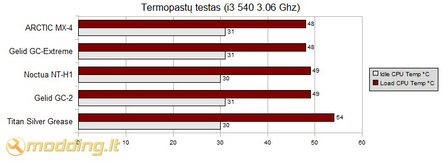
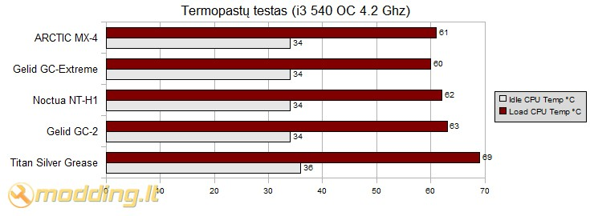

Arctic Cooling ARCTIC MX-4 termopastos apžvalga
Termopasta - komponentas, kuris turi nemenką įtaką procesoriaus aušinimo efektyvumui. Beveik kiekvienas aušinimo elementų gamintojas savo asortimente turi termopastas. Ne išimtis ir Arctic Cooling kompanija. ARCTIC MX-4 - naujausia Arctic Cooling kompanijos siūloma termopasta. Šiandieną išmėginsime jos efektyvumą aušinant procesorių.
Žvilgsnis iš arčiau
ARCTIC MX-4 termopasta, kaip ir daugelis esančių rinkoje, pateikiama plastmasiniame švirkšte. Jos tankis nežymiai didesnis nei Noctua NT-H1 ir yra 2.5 g/m
³. Termopasta pasižymi sąlyginai dideliu šilumos laidžiu, jis lygus 8.5 W/mK. Tokį patį šilumos laidumą turi ir Gelid GC-Extreme termopasta. Gaminio komplektacija: rinkinyje rasite tik termopastą, užtepimui skirta mentelė komplekte nepridedama.
Specifikacijos
- Masė: 4 g
- Tankis: 2.5 g/m ³
- Šiluminis laidis: 8.5 W/mK
-
Galiojimo laikas: iki 8 metų užtepus ant elemento
- Nelaidi elektrai
- Nesukelianti korozijos
Kalbant apie termopastas, nemažą reikšmę turi jų konsistencija. ARCTIC MX-4 konsistencija skysta, tačiau netaki. Ji gerai limpa prie paviršiaus, nesivelia ir lengvai paskleidžiama ant paviršiaus - konsistencija puikiai tinkanti naudojimui. Lyginant su Gelid GC-2, MX-4 termopasta yra pranašesnė, kuomet lyginamas sukibimas su paviršiumi bei patogumas užtepti. Dešinėje esančioje foto matote užteptos termopastos pavyzdį.
Rezultatai
Testavimo sistema:
- CPU Cooler - NH-U12P SE2 su vienu NF-P12 ventiliatoriumi
- Case - Antec Mini P180
- Mainboard - Asus P7H55D-M Pro S1156 DDR3 HDMI UATX
- CPU - Intel Core i3-540 3.06Ghz 4M LGA1156 73W
- RAM - Corsair DDR3 2X2GB 1600MHZ CL8 CMX4GX3M2A1600C8
- HDD - SEA BARRACUDA 160GB 7200rpm
- PSU - Cooler Master Silent Pro M700
- Case Fans - Noctua NF-S12B FLX 120mm (U.L.N.A 600rpm, 49.2 m³/h, 0.34 mm H2O), Antec 200mm TriCool (400rpm, 39 CFM)
Procesoriaus (CPU) temperatūra testuojama Idle ir Load rėžimais. Load rėžimui naudojama OCCT programa. Temperatūros rodmenys stebėti PC Probe II V1.04.74 ir OCCT programomis. Testavimams naudotas Antec Mini P180 korpusas galinėje sienelėje turi Noctua NF-S12B FLX 120mm orą ištraukiantį aušintuvą (1200rpm, 100.6 m³/h, 1.31 mm H2O), o taip pat viršuje esantį, orą ištraukiantį, Antec 200mm TriCool ventiliatorių (400rpm, 39 CFM).
Testuojamos termopastos:
- Arctic Cooling ARCTIC MX-4
- Noctua NT-H1
- Gelid GC-EXTREME
- Gelid GC-2
- Titan Silver Grease
Pirmasis testas su Intel Core i3-540 3.06 Ghz procesoriumi.

Antrasis testas su paspartintu Intel Core i3-540 3.06Ghz @ 4.2 Ghz procesoriumi.

Testuose su standartiniais dažniais veikiančiu Intel Core i3-540 3.06 Ghz procesoriumi didesnių skirtumų tarp bandomų termopastų nėra, tačiau atliekant testus su paspartintu iki 4.2 Ghz dažnio procesoriumi jau išryškėja termopastų efektyvumo skirtumai. ARCTIC MX-4 termopasta vienu laipsniu nusileido tik vienai testuose bandytai termopastai - Gelid GC-EXTREME. Kitas testuotas termopastas MX-4 savo efektyvumu lenkia keliais laipsniais.
Išvados
Pliusai:
- geri aušinimo rezultatai
- gera konsistencija - lengvai tepama
- užtepus naudojama iki 8 metų
- gera kaina
Minusai:
- rinkinyje nėra tepimo mentelės
 ARCTIC MX-4 termopasta testuose nusileido tik vienai termopastai, bei aplenkė kitas teste dalyvavusias, tame pačiame kainų segmente esančias termopastas. Reiktų paminėti gerą ARCTIC MX-4 termopastos kosnistenciją - ją lengva užtepti ir tolygiai paskleisti ant CPU paviršiaus, o taipogi ji lengvai nuvaloma. Gamintojo teigimu, ši termopasta nekeičia savo savybių ilgą laiką, todėl užtepus ją ant CPU ar kito elemento, ją galima naudoti iki 8 metų. Kalbant apie šio gaminio kainą, gamintojo tinklapyje ji nurodomą ~35 Lt, tačiau galima rasti internetines parduotuves, kur ji kainuoja apie 20 Lt. Lyginant kainą su kitų testuotų termopastų kainomis, MX-4 yra pigesnė nei GC-Extreme ir NT-H1, todėl jos kainos/kiekio ir efektyvumo santykis yra geras. Susumavęs visus pliusus ir minusus,
ARCTIC MX-4 termopastai suteikiu
9 balus iš 10 bei
modding.lt renkasi įvertinimą.
ARCTIC MX-4 termopasta testuose nusileido tik vienai termopastai, bei aplenkė kitas teste dalyvavusias, tame pačiame kainų segmente esančias termopastas. Reiktų paminėti gerą ARCTIC MX-4 termopastos kosnistenciją - ją lengva užtepti ir tolygiai paskleisti ant CPU paviršiaus, o taipogi ji lengvai nuvaloma. Gamintojo teigimu, ši termopasta nekeičia savo savybių ilgą laiką, todėl užtepus ją ant CPU ar kito elemento, ją galima naudoti iki 8 metų. Kalbant apie šio gaminio kainą, gamintojo tinklapyje ji nurodomą ~35 Lt, tačiau galima rasti internetines parduotuves, kur ji kainuoja apie 20 Lt. Lyginant kainą su kitų testuotų termopastų kainomis, MX-4 yra pigesnė nei GC-Extreme ir NT-H1, todėl jos kainos/kiekio ir efektyvumo santykis yra geras. Susumavęs visus pliusus ir minusus,
ARCTIC MX-4 termopastai suteikiu
9 balus iš 10 bei
modding.lt renkasi įvertinimą.
Modding.lt komanda dėkoja Timothy Yun iš www.arctic.ac už apžvalgai suteiktą produktą.
Jei norėsite pakomentuoti mano straipsnį arba pareikšti savo nuomonę, apsilankykite Modding.lt forume.


{kind=link}
{kind=link}
{kind=link}
{kind=link}
{kind=link}
{kind=link}